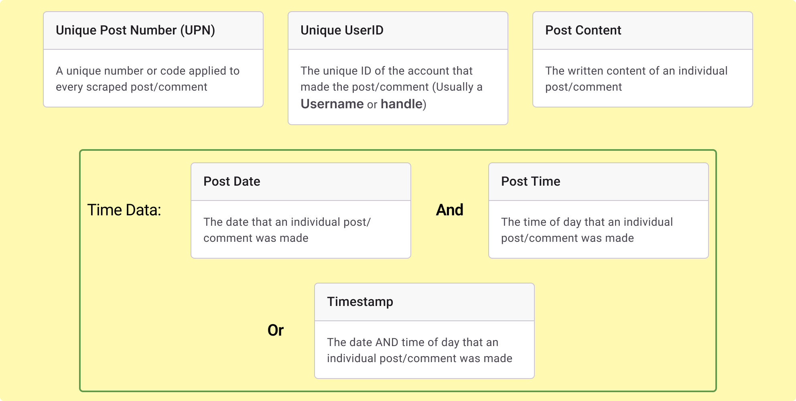
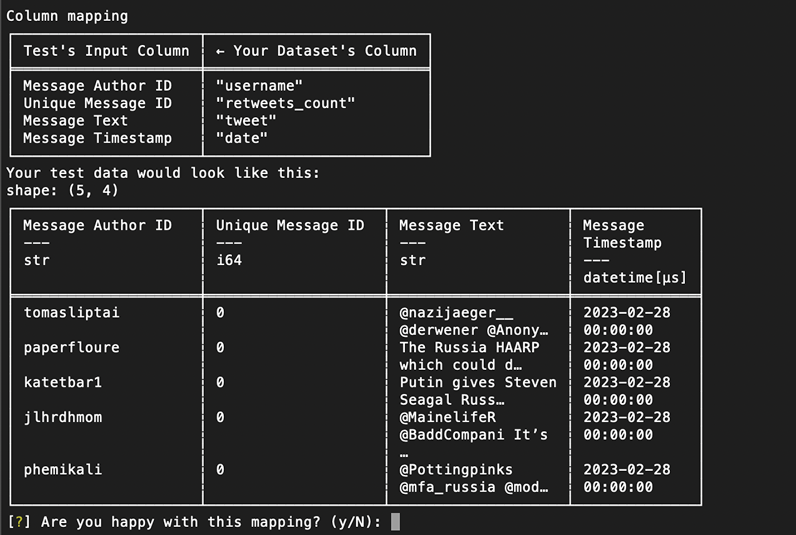

Data Preparation
Whether in .csv, .json, or .xlsx form, nearly all datasets of social media activity contain columns that correspond to conceptually similar parameters, such as username, post content, or a unique post number attached to each post.
The Mango Tree command line interface (CLI) provides a set of tests that require different parameters for analysis (e.g. tests examining for CIB based on repeated phrases require the parameter for post content). See the Test Library page for information regarding which parameters are needed for each test.
The parameters currently employed by CIB Mango Tree tests are listed below:
Note: Some datasets have parameters related to time that are separated into multiple columns, such as post time and post date. Other datasets have a single column where time of day and date are represented in combined format, often called timestamp. Both formats are readable by the CLI.
Step 1: Understand your database's columns
Your dataset might have different names for each of its columns, but the data within often corresponds to the parameters above. For example: "Unique UserID" might be labeled in your data as "account name" or "User ID".
In order to properly use CIB Mango Tree test programs, you will need to be able to identify which columns in your dataset hold data that is conceptually identical to the parameters above. You can use your best judgment, or contact the supplier of your dataset to assign the correct parameters. The Mango Tree will attempt to identify these parameters and present you with its options.
Let's look at two sample datasets of social media activity:
Dataset A
| Comment # | RealUsername | Date Posted | Time Posted | Post Content |
|---|---|---|---|---|
| 1 | snipcerebrum | 5/2/2024 | 6:01 | Watermelon cures cancer! |
| 2 | postboxinterest | 5/3/2024 | 13:56 | Kiwi from Florida is poison |
| 3 | tautburden | 5/3/2024 | 15:28 | Mango and IPA beer causes rashes |
| 4 | frazzledsplatter | 5/5/2024 | 3:50 | Don't believe the doctors about apples |
Dataset B
| Unique Post Number | Unique UserID | Post Date | Post Time | Post Content |
|---|---|---|---|---|
| 1 | snipcerebrum | 5/2/2024 | 6:01 | Watermelon cures cancer! |
| 2 | postboxinterest | 5/3/2024 | 13:56 | Kiwi from Florida is poison |
| 3 | tautburden | 5/3/2024 | 15:28 | Mango and IPA beer causes rashes |
| 4 | frazzledsplatter | 5/5/2024 | 3:50 | Don't believe the doctors about apples |
Dataset A and Dataset B are identical, and yet the columns where the parameters are held have different names. For example, both Dataset A and Dataset B contain a parameter corresponding to a username for the account which made a post. In Dataset A, this parameter is titled "RealUsername" whereas it is called "Unique UserID" in Dataset B.
Dataset C
| Unique Post Number | Unique UserID | Timestamp | Post Content |
|---|---|---|---|
| 1 | snipcerebrum | 2024-5-2 06:01 | Watermelon cures cancer! |
| 2 | postboxinterest | 2024-5-3 13:56 | Kiwi from Florida is poison |
| 3 | tautburden | 2024-5-3 15:28 | Mango and IPA beer causes rashes |
| 4 | frazzledsplatter | 2024-5-5 3:50 | Don't believe the doctors about apples |
Dataset C contains the same data as Dataset A and Dataset B. However, the time-related data of Dataset C is combined into a single column, titled "Timestamp". Meanwhile, the time-related data for Dataset A and Dataset B is divided into two columns, corresponding to date and time of day. CLI will be able to process your time-related data, regardless of whether it is divided into multiple columns or divided into a single column.
Important! The columns in Dataset B and Dataset C employ the same parameter titles as the CIB Mango Tree command line interface!
Step 2: Mapping your Database Columns in the CLI
When you run an analysis of your dataset in the Mango Tree CLI, you will be asked by the CLI which columns in your dataset correspond to the parameters needed for a given test.
The CLI will present you with which columns in your dataset that it believes correspond to the required parameters, and you will be given the option to approve or correct the column mapping before running the analysis. If columns are mapped incorrectly, the CLI will not be able to provide you with accurate analysis.
The below screenshot demonstrates how the CLI will ask you to change the columns that it has mapped onto needed parameters, if necessary.
Once you have correctly mapped your dataset columns to the needed parameters, you can run the tests and receive the analysis!